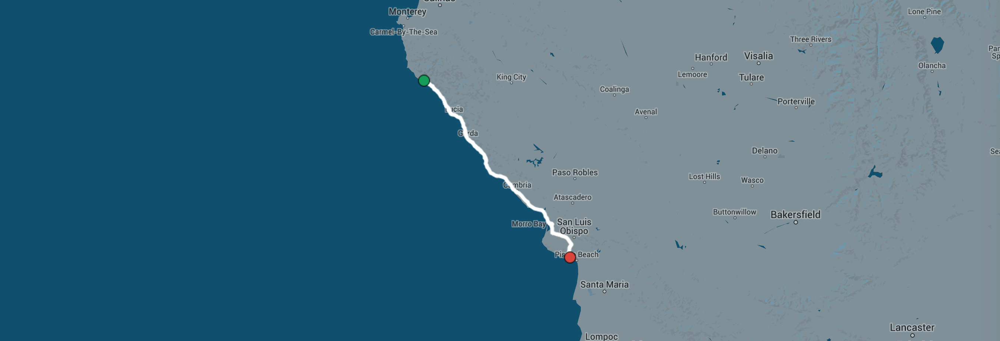

Jess and Jim's California Coast Honeymoon Adventure
Many months before our wedding Jess had a really good idea. Instead of the usual multiple-day stressful lead up to our wedding day, instead of flying, instead of driving, we would ride our bikes the 515 miles from our apartment in San Francisco to Jess's parents' house, our wedding venue, in Long Beach just South of LA.
We (mostly Jess) got to work planning. Her number one condition was that we stayed in the best hotels we could along the route. She wasn't going to be roughing it after a full day in the saddle. Every hotel was booked, every breakfast, lunch and dinner was planned. Massages were arranged at strategic locations. The ride was planned long before wedding planning had even begun.
The trip turned out to be the best thing we've ever done. Spending that time together in the days leading up to our wedding brought us together like we hadn't been before. It was magical.
Day 1: San Francisco to Santa Cruz
86.1 miles, 4883 feet
Day 2: Santa Cruz to Big Sur
92.3 miles, 4714 feet
Day 3: Rest Day
2 miles, 400 feet

Day 4: Big Sur to Pismo Beach
113.9 miles, 6899 feet
Day 5: Pismo Beach to Santa Barbara
90.3 miles, 4338 feet

Day 6: Santa Barbara to Santa Monica
102.6 miles, 2564 feet